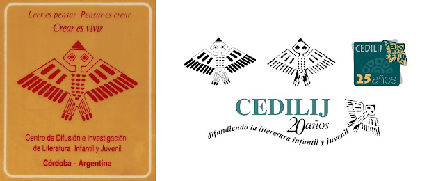
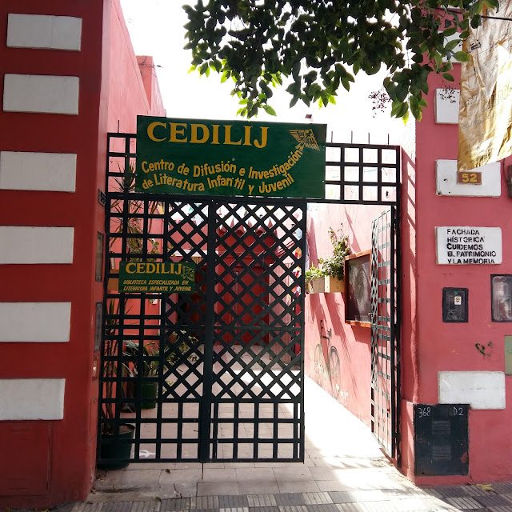
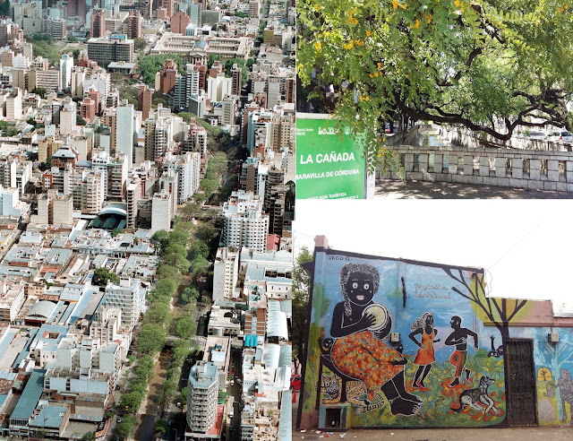
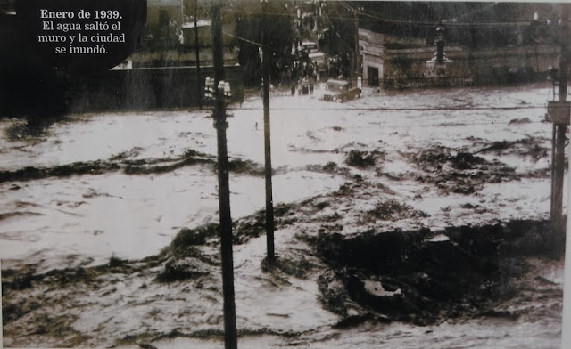
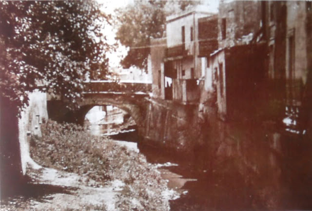

Un centro cultural para la literatura infantil y juvenil
CEDILIJ trabaja desde barrio Güemes, en Córdoba, para garantizar el acceso a la literatura para infancias y jóvenes.
Nuestra historia
El CEDILIJ (Centro de Difusión e Investigación de Literatura Infantil y Juvenil) es una Organización Civil sin Fines de Lucro. Fue fundado en Córdoba, Argentina, en 1983 por un grupo de profesionales vinculados a la Literatura, el Arte y la Infancia. Su quehacer y su historia están ligados al particular momento argentino del retorno a la democracia luego de padecer los más oscuros años de una dictadura militar.
Su misión es promover la formación de niños y jóvenes lectores desde la Literatura. Desarrolla esta labor con el objetivo de hacer realidad en cada persona, el derecho a la lectura y a la cultura en todas sus representaciones. Entiende que esa es su contribución para un ejercicio pleno de la ciudadanía, en el contexto latinoamericano donde grandes sectores de la población permanecen en la pobreza, excluidos de oportunidades educativas y sin acceso igualitario a los ricos y diversos bienes culturales de esta región del planeta.
Desde su constitución como organización de la sociedad civil, se caracteriza por un fuerte perfil democrático tanto en su funcionamiento interno, como en sus modos de vinculación y trabajo en red con otras organizaciones sociales: secciones de IBBY Latinoamérica, el Estado y el sector empresarial (fundaciones, editoriales y otros).
A lo largo de sus cuatro décadas de trabajo, CEDILIJ desarrolla proyectos y programas en función de una atenta lectura del contexto. Ha consolidado un reconocimiento tanto por el perfil innovador de sus intervenciones socio comunitarias, como por la capacidad de sostenerlos en el tiempo y adecuarlos a las necesidades de sus destinatarios.
En sus comienzos, ante la ausencia de políticas públicas de lectura, de formación docente y de libros en las escuelas, CEDILIJ estuvo fuertemente enfocado en la formación de maestros, bibliotecarios y mediadores de lectura, y en la promoción de libros de calidad literaria en las escuelas. Participó activamente de la Red Latinoamericana y Asociados de Centros de Documentación de LIJ (Literatura Infantil y Juvenil) dentro del Proyecto Interamericano de Literatura Infantil (PILI) de la Organización de Estados Americanos (OEA). Fue determinante su trabajo conjunto con otras organizaciones pioneras en la región para el desarrollo de políticas públicas tendientes a garantizar el Derecho a la lectura a toda la población.
A partir de la segunda década de CEDILIJ se implementaron proyectos de promoción de la lectura con un dispositivo conformado por tres ejes: la formación de mediadores, la provisión de libros de calidad estética y ocasiones de encuentro entre los lectores y los libros. Se realizaron intervenciones en espacios urbanos, marginales y rurales; y además de las escuelas, en centros infantiles, bibliotecas populares, centros vecinales, espacios de salud y hospitales. Cada uno de estos proyectos conformó el Programa de Promoción de la lectura Por el derecho a leer. Varios de estos proyectos se continúan desarrollando en manos de sus iniciales destinatarios, como es el caso de Los Libros de La Almohada sostenido por los voluntarios del Hospital de Niños Córdoba desde hace 18 años.
CEDILIJ ha recibido reconocimientos por su labor, a nivel nacional e internacional, entre ellos el IBBY Asahi 2002 por su Programa de Promoción de la Lectura Por el Derecho a Leer, el premio Vivalectura 2008 por su proyecto El Puesto de los Libros. Una de sus fundadoras, María Teresa Andruetto, mereció el Premio Andersen 2012 (único otorgado, hasta la fecha, a un escritor de Hispanoamérica). Asimismo, dos de sus presidentes, Cecilia Bettolli y Susana Allori, recibieron el Premio Pregonero como especialistas, máximo galardón nacional en el campo de la LIJ.
El sostenimiento institucional de CEDILIJ proviene del trabajo voluntario de un equipo de miembros con diversas formaciones profesionales; de la prestación de servicios de capacitación; del asesoramiento y la difusión de LIJ y Lectura; del apoyo del Estado Municipal (acotado a una pequeña sede para su funcionamiento); y del financiamiento ocasional obtenido por convocatorias a concurso de proyectos.
Nuestro logo

El logotipo de CEDILIJ fue realizado por Cristina De la Colina en 1984. Luego, en diferentes momentos de nuestra historia, se presentó con estilizaciones realizadas por Andrés Garay, Mariana González y nuestra compañera Soledad Rebelles.
Cristina De la Colina falleció en 1995. Estuvo junto a nosotros en los inicios del Centro y desde su sensibilidad plástica supo plasmar, en el logotipo que nos identifica, lo que buscábamos: una imagen con raíces latinoamericanas y alas para volar.
Nuestra sede
La casa de CEDILIJ

La sede de CEDILIJ se encuentra en un predio distintivo de la ciudad de Córdoba: el "Paseo de las Artes", en las márgenes de un arroyo manso que por desbordarse furiosamente en épocas de lluvia, fue canalizado con una de las obras de ingeniería que devendría en rasgo de identidad: La Cañada, una línea verde que atraviesa el centro de la ciudad.

En ese sector confluían a mediados del Siglo XIX las carretas que llegaban del sur, el oeste y las serranías, para comerciar frutas, legumbres y hortalizas. Por esa razón fue creciendo alrededor del arroyo una población labradora, comercios y construcciones de características marginales cuyos habitantes tenían, según se cuenta, una marcada inclinación a las peleas con cuchillo y a la superstición. Al cobijo de esos asentamientos conocidos como "Pueblo Nuevo" y "El Abrojal" nacieron los fantasmas más populares de la ciudad.

Como hacia 1889, según textos de época y explicaciones posteriores este lugar devino en un "rancherío miserable"; por iniciativa del entonces Intendente Luis Revol se construyeron en lo que fuera la Plaza de Carretas, sesenta "casas de inquilinato" para las familias obreras. Un historiador apuntó: "más que las defectuosas condiciones de las casas, la defectuosa administración permitió que se convirtieran en un foco antihigiénico e inmoral, y obligó a medidas de saneamiento".

Desde 1980 y por una nueva decisión política, esas casas y la vieja plaza se convirtieron en un Centro Cultural en el que actualmente está asentado el Museo Iberoamericano de Artesanías, el Archivo Histórico Municipal, diferentes dependencias municipales y sedes de organizaciones no gubernamentales como CEDILIJ. Permanentemente se desarrollan actividades artísticas de todo tipo y los fines de semana tiene lugar una feria de Artesanías conocida como "Mercado de las Pulgas".
La Feria Franca de verduras y frutas (en la que se inserta nuestro Puesto de los Libros) sigue ocupando las calles los sábados por la mañana. Han proliferado los negocios de venta de antigüedades. En sus cercanías se encuentran, entre otros sitios de interés, varios museos, el Observatorio Astronómico y edificaciones jesuíticas declaradas Patrimonio de la Humanidad.
Las veras del arroyo encauzado por La Cañada, forestado de tipas a mediados de 1940, dio calidez a la actividad de los chicos trabajadores de la calle nucleados alrededor del Proyecto La Luciérnaga. Pero al despuntar el sol, viejos y nuevos fantasmas salen y demuestran que siguen siendo los verdaderos dueños del lugar.